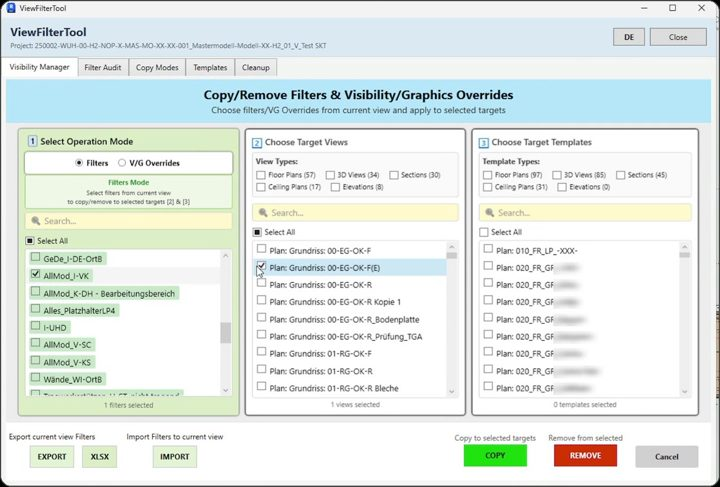
ViewFilter
Revit Add-in | Visibility · Audit
One window for every view-filter task: copy filters and V/G overrides between views and templates, audit for unused or duplicate filters, move templates between projects as JSON, purge what's left. German and English UI.
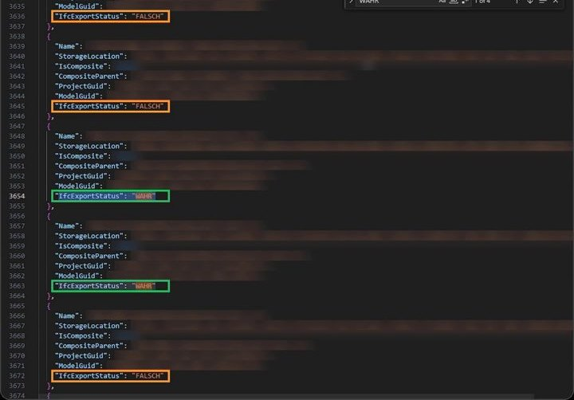
AutoIfcExporter
Server Pipeline | Revit · ACC · SharePoint
A scheduled, unattended pipeline. It indexes the models on Autodesk Construction Cloud, runs real Revit to export IFC with the project's own settings, publishes the results to SharePoint and emails a log, with no per-conversion cloud cost.

KranAbstand
Revit Add-in | Measure
Measures the distance from every element to every crane and writes the result into a parameter as JSON, so lifting and crane-capacity checks can read it directly from the model.

PlanExporter
Revit Add-in | Export
Exports sheets from a tree view to PDF and DWG, as single files or one combined document, with optional QR codes. Naming rules build each file name from project, sheet or view parameters. The model stays unedited.
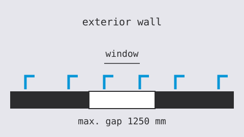
Außenwinkel
Revit Add-in | Rule-based Placement
Places corner brackets along exterior wall faces. It works out each wall's inward side by ray casting, then adds positions at wall ends, columns and windows, and fills the gaps up to a 1250 mm maximum.
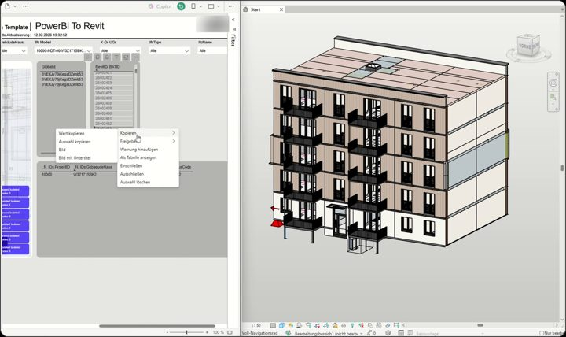
PowerBiRevitBridge
Integration | Power BI · Revit
Copy element IDs in a Power BI report and Revit selects and isolates those elements. A tray agent and a Revit add-in cooperate over the clipboard, and the add-in refuses to act if the open model doesn't match the report.

Schubverbinder
Revit Add-in | Rule-based Placement
Places mirrored shear-connector pairs along the joints between neighbouring ceiling elements. Offsets depend on joint length and ceiling type, and each pair then slides to keep clear of the formwork cones already placed.
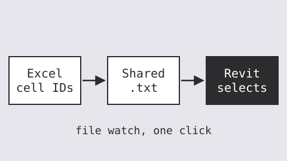
RevitNavigator
Integration | Excel · Revit
Select cells of element IDs in Excel, click one button and Revit selects those elements. A VSTO Excel add-in and a Revit add-in talk through a shared file, deployed together by one installer.
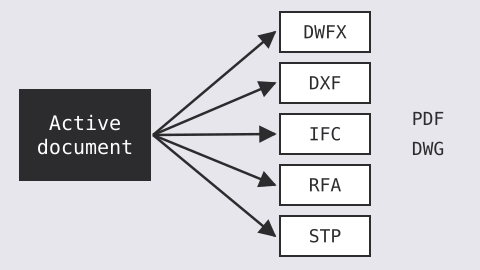
Exporter
Inventor Add-in | Export
Exports the active part, assembly or drawing to several formats and folders in one run. It finds the project folder from the stock number, builds names from iProperties and protects existing files.
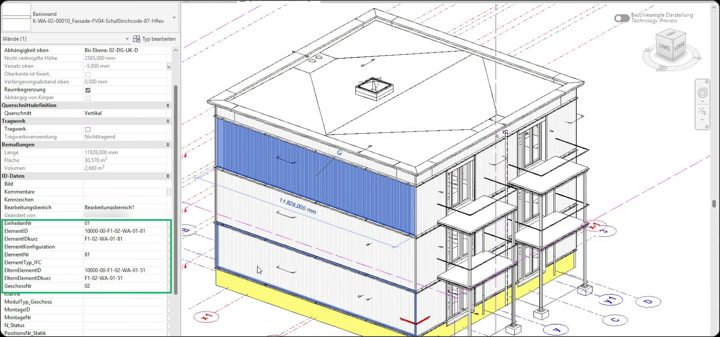
IdVergabe
Revit Add-in | Parameters · SQL Server
Assigns 20 identification parameters to every element in a model. Spatial containers, hierarchy rules and a SQL Server master-data database drive the values, replacing manual numbering of element, unit, floor, room and assembly IDs.
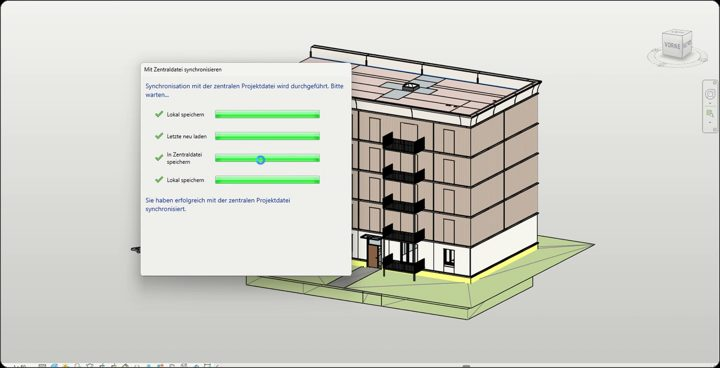
FamilyUpdater
Automation | Revit · Tray Watcher
Rolls changed families out to Revit models. A tray app watches the family folder and records changes, and the add-in offers what changed, loads it with overwrite and keeps a record so nothing is applied twice.
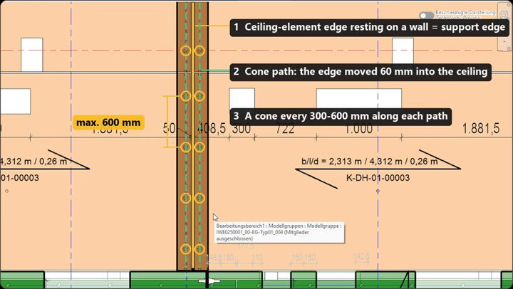
Schalungskegel
Revit Add-in | Rule-based Placement
Places formwork cones in timber-concrete composite ceilings. It finds the edges resting on walls, offsets them into a path, splits the path by structural spacing rules and places the right family type at every point.
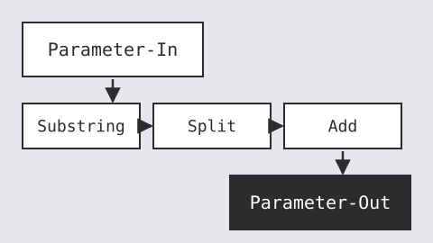
ParamFlow
Revit Add-in | Parameters
Batch-copies one parameter into another, optionally through a small string pipeline of Substring, Split and Add modules that run in order, for a whole category or a single element.
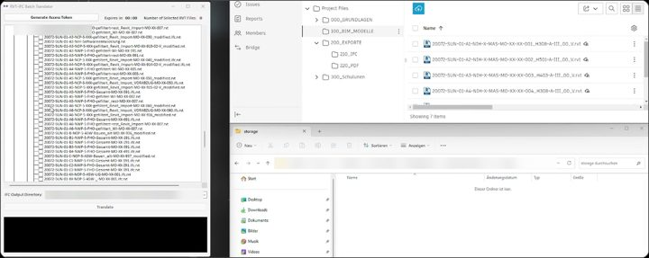
Revit2IFC_CloudTranslator
Desktop App | Python · APS API
A Python desktop app that converts ACC-hosted Revit files to IFC through the APS Model Derivative API, with no local Revit. Browse the hub tree, translate, download the IFCs and upload them back as new versions.
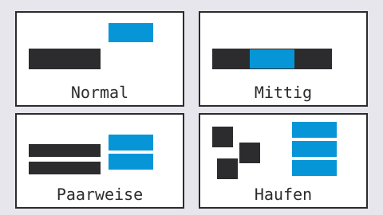
TagPlacer
Revit Add-in | Annotation
Tags elements in the active view by rules, one per row: type prefix, tag family and placement strategy. Strategies search for free space, centre the tag, pair neighbours or stack clusters.
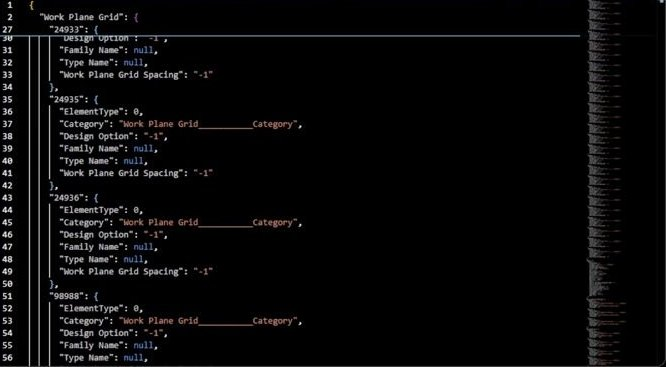
BimDataExporter
Revit Add-in | Export · GeoJSON
Batch-processes every Revit file in a folder into structured JSON: levels and reference points, georeferenced room boundaries as GeoJSON and WKT, and every element with all its parameters, for GIS and database use.
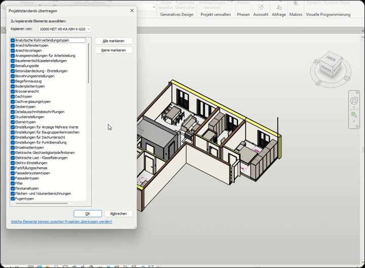
BatchProjectStandards
Automation | Revit · UI Automation
Transfers project standards from one cloud model to many, syncs each with central, then emails the run log and cleans up after itself. Unattended after the first selection, driving Revit's own dialogs through UI automation.
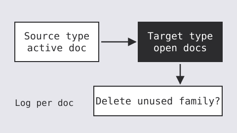
FamilyReplacer
Revit Add-in | Families
Swaps family types across open documents with group-conflict handling and per-document rollback, offers to delete families left without instances, and writes a log for each document.
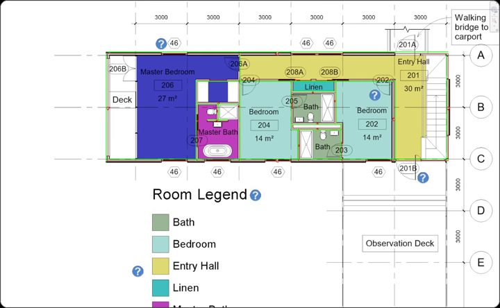
WallSideVisualizer
Revit Add-in | Annotation
Annotates every wall in a floor plan with its location line, the direction it was drawn in and its finished face side, collected in one detail group so you can see which side of a prefabricated wall goes on the conveyor belt.
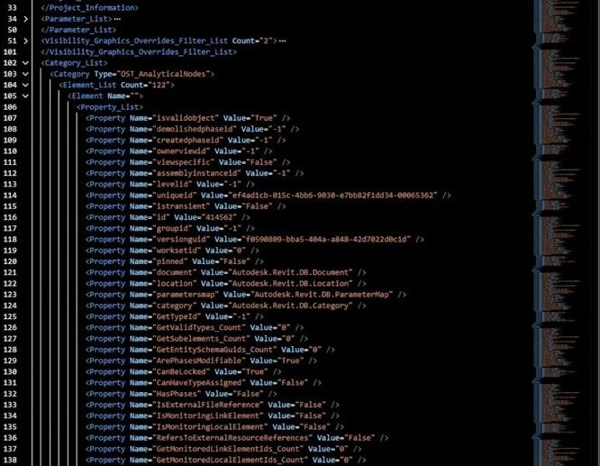
XMLExport
Revit Add-in | Export
Writes a project's whole data structure to one XML file: project information, parameter definitions, view-filter rules and every element with its values, ready for Excel, Tableau or SQL.
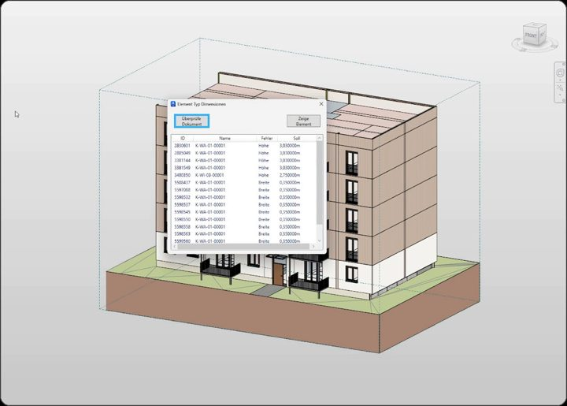
ElementTypeDimensionChecker
Revit Add-in | Audit · Excel
Checks wall dimensions against a target catalogue in Excel. Every deviation is listed with the wrong dimension and its target value, and one click zooms to the wall in the model.
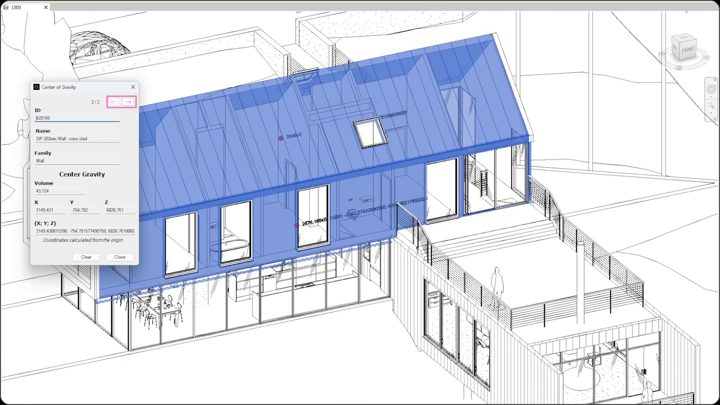
CenterOfGravity
Revit Add-in | Measure
Computes the true volume-weighted centroid of selected elements from their solid geometry rather than the bounding box, places a marker there and shows live values in a modeless window that follows the selection.
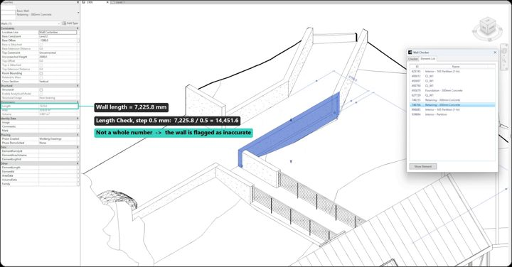
WallChecker
Revit Add-in | Audit
Audits the geometric precision of walls: length, end-point coordinates and angle must each be an exact multiple of a chosen step. Failing walls are listed, and one click zooms straight to each.
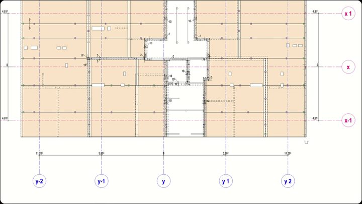
LinkTagger
Revit Add-in | Annotation
Tags elements inside linked models, which Revit makes tedious by hand. Filter by element type, pick a tag family and type, and every match in the active view is tagged, with an optional grid layout.
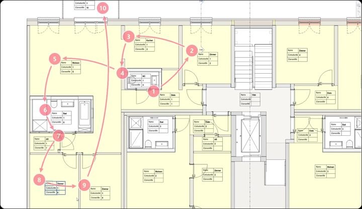
RoomNumbering
Revit Add-in | Numbering
Numbers the rooms of each unit by their angle around a start room, clockwise or counter-clockwise from a chosen base angle. Runs for one unit on one level, or for all units on all levels at once.
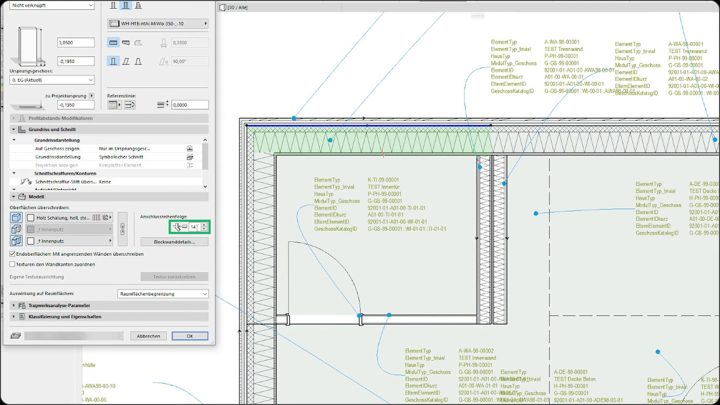
Anschlussreihenfolge
Archicad Add-on | C++
Sets the junction order of every wall in an Archicad project from a CSV of rules by classification, position and load-bearing function, with a per-wall modifier property for exceptions.